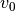
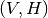
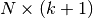
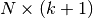

MatrixExponential¶
About the MatrixExponential functions¶
The WaveBlocks Project
@author: R. Bourquin @copyright: Copyright (C) 2010, 2011, 2012, 2013, 2014, 2015, 2016 R. Bourquin @license: Modified BSD License
Class documentation¶
The WaveBlocks Project
This file contains several different algorithms to compute the matrix exponential. Currently we have an exponential based on Pade approximations and an Arnoldi iteration method.
@author: R. Bourquin @copyright: Copyright (C) 2007 V. Gradinaru @copyright: Copyright (C) 2010, 2011, 2012, 2015 R. Bourquin @license: Modified BSD License
-
MatrixExponential.arnoldi(A, v0, k)[source]¶ Arnoldi algorithm to compute the Krylov approximation
 of a matrix
of a matrix  .
.Parameters: - A – The matrix of shape
 to approximate.
to approximate. - v0 – The initial vector  of length
 .
. - k – The number
 of Krylov steps performed.
of Krylov steps performed.
Returns: A tuple  where
 is the large matrix of shape
 containing the orthogonal vectors and is the
small matrix of shape
is the large matrix of shape
 containing the orthogonal vectors and is the
small matrix of shape  containing the Krylov approximation
of .
containing the Krylov approximation
of .- A – The matrix
-
MatrixExponential.matrix_exp_arnoldi(A, v, factor, k)[source]¶ Compute the solution of
 via
steps of a the Arnoldi krylov method.
via
steps of a the Arnoldi krylov method.Parameters: - A – The matrix of shape .
- v – The vector
 of length .
of length . - factor – An additional scalar factor
 .
. - k – The number of Krylov steps performed.
Returns: The (approximate) value of
 .
.- A – The matrix